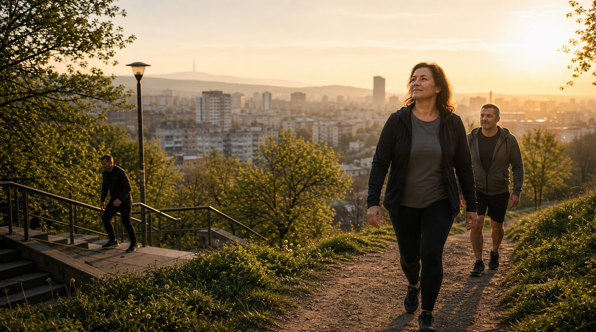
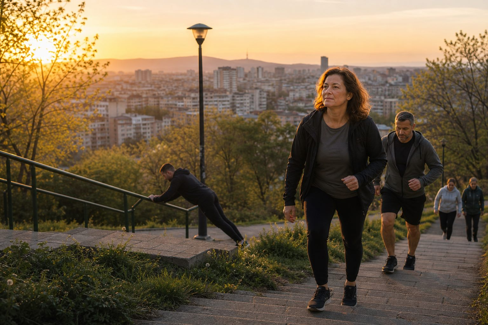

Не ти трябва фитнес. Трябва ти усещането, че пак можеш да се качиш по стълбите, да излезеш навън и да имаш въздух в края на деня.


Стълби, разходка, въздух, малко сила. Това връща усещането, че тялото пак е твое.
6 системи, които движението лекува
Движението увеличава BDNF — протеин, който кара мозъка да расте нови неврони. Буквално ставаш по-умен.
Движението повишава серотонин и ендорфини — естествени антидепресанти. 30 минути бягане = доза антидепресант, без страничните ефекти.
Активните хора заспиват по-бързо, спят по-дълбоко и се будят отпочинали. Ефектът е по-силен от мелатонин.
По-малко от 7 часа сън вдига кортизола → тялото задържа мазнини и разгражда мускули. Растежният хормон (HGH), който изгражда мускулите, се отделя само по време на дълбок сън. Тренираш, но не спиш — буквално губиш резултатите от тренировките.
Силовите тренировки повишават тестостерон. Движението намалява кортизол (хормона на стреса) и подобрява инсулиновата чувствителност.
Сърцето е мускул. Колкото повече го натоварваш, толкова по-силно става. Активните хора живеят средно 5 години повече.
80% от болките в гърба не са от „дископатия" — а от слаби мускули. Силовите тренировки са най-доброто лекарство за ставите.
И двете. Ето защо.
Мускулите горят калории дори когато спиш. Повече мускулна маса = по-бърз метаболизъм. 2 пъти в седмицата е достатъчно.
20 минути интервална тренировка може да даде ефект като доста по-дълго равномерно бягане. Тялото продължава да харчи повече енергия и след тренировката.
2× силова + 2× интервална тренировка + ходене всеки ден. Това е всичко.
4 уреда · под 100 лв · заемат рафт
Най-универсалният и евтин уред. С ластици можеш да тренираш почти всяка мускулна група — рамене, гръб, крака, корем. Различни нива на съпротивление (леки, средни, тежки) позволяват прогресия.
Чифт гири заменя половин фитнес. Бицепс, трицепс, рамене, гръб, крака — всичко е покрито. Започни с 8–10 кг и качвай. Регулируемите гири (с допълнителни тежести) са по-гъвкавото решение.
Монтира се на каса без пробиване. Набирания — най-доброто упражнение за горна тренировка. Ако не можеш набирания — вися с ластик за помощ. Напредъкът е бърз и видим.
С лоста покриваш: набирания, австралийски набирания, вис (декомпресия на гръбначен стълб), коремни упражнения с вдигане на крака.
Позволява всяка подова тренировка без болки в ставите — лицеви, планк, корем, стречинг. Необходима база за всичко останало. Свива се и стои зад вратата.
Цял горен дял · Цял долен дял · Корем · Кардио (HIIT) · Стречинг
Обща инвестиция: ~100 лв. Фитнес абонамент: ~50 лв/месец. Изплащат се за 2 месеца — и след това тренираш безплатно завинаги.
Не мисли за фитнес програма. Направи 10 минути ходене + 10 клека до стол + 20 секунди планк. Ако това стане днес, страницата си е свършила работата.
Това не значи "спри завинаги". Значи "тренирай по-умно".
В повечето случаи проблемът не е, че се движиш, а че не си достатъчно стабилен и силен. Кръстът често страда, когато коремът, седалището и гърбът са слаби, а целият ден минава в седене.
Какво да правиш: ходене, bird-dog, мост за седалище, dead bug, страничен планк, леко разтягане на хип флексори и задно бедро.
Какво временно да намалиш: резки навеждания, тежки тяги от пода, усукване с тежест, HIIT със скокове, ако провокират болка.
Практично правило: ако болката е до 3/10 и не се усилва след тренировката, движението обикновено е полезно. Ако се качва рязко или "стреля" по крака, спираш и търсиш преглед.
Коляното рядко е "само коляно". Често проблемът идва от слабо седалище, слаб предно бедро, лош контрол в глезена или твърде рязко натоварване след дълъг период без движение.
Какво да правиш: ходене по равен терен, задържане до стена, мост за седалище, качване на ниско стъпало, бавен клек до стол, упражнения за прасец и бедро без болка.
Какво временно да намалиш: дълбоки клекове, спринтове, скокове, тичане по наклон или слизане по много стълби, ако дразнят коляното.
Практично правило: търсим движение с контролирано натоварване, не пълна почивка. Ако коляното се подува, блокира, дава "отказ" или болката е остра, това вече не е за самолечение.
Ако имаш изтръпване, слабост в крака, подуване, заключване на коляното, болка нощем или болка след травма, не разчитай на сайт. Трябва ортопед, невролог или кинезитерапевт.
Най-подценяваното движение
Не само за да изглеждаш. За да живееш.
Мускулната маса не е само естетика — тя е метаболитен орган, инсулинов буфер и предиктор за дълголетие. Хората с повече мускули живеят по-дълго, боледуват по-малко и остаряват по-добре. Ходенето и физическата работа помагат, но не изграждат автоматично мускули, ако няма прогресивно натоварване.
След 30-тата година губиш 3–5% мускулна маса на десетилетие — без да правиш нищо активно. Това е саркопения: бавна, невидима загуба на сила и функция.
На 60 без тренировки вече си загубил ~20% от силата си. На 70+ — паданията и фрактурите стават реален риск. Загубата на мускули ускорява диабета, отслабва имунната система и намалява костната плътност.
Разходките са страхотни за сърдечно-съдовата система и психиката. Но те не спират загубата на мускулна маса. Мускулите се поддържат само с прогресивно натоварване — тежести или телесно тегло с прогресия.
Същото важи и за физическата работа: ако само носиш, буташ, стоиш прав или вървиш много, това прави тялото по-издръжливо, но обикновено не дава достатъчен, измерим прогресивен стимул за растеж на мускули. Еднократните тежки движения, усукванията и вдигането в неудобна позиция са по-често риск за кръст, рамо и коляно, отколкото качествен стимул за мускулен растеж. Мускулите растат от повторяемо, контролирано и прогресивно натоварване. Трудът уморява. Тренировката изгражда.
Ако ходиш 10 000 крачки на ден, но не вдигаш тежести — все още губиш мускули. Кардиото и силовите тренировки имат различни, невзаимозаменяеми ефекти. Трябват и двете.
Мускулната тъкан е основният консуматор на глюкоза в тялото — при контракция (движение) поема захарта без нужда от инсулин. Повече мускули = по-добра инсулинова чувствителност = по-нисък риск от диабет тип 2.
Мускулите горят калории дори когато спиш — 1 кг мускул изгаря ~13 kcal/ден в покой срещу ~4 kcal за 1 кг мазнина. Повече мускули = по-бърз базален метаболизъм.
| Ефект от редовни силови тренировки | Промяна |
|---|---|
| Инсулинова чувствителност | +25–30% |
| Базален метаболизъм | +200–400 kcal/ден |
| Риск от диабет тип 2 | −32% |
| Костна плътност | Значително увеличена |
| Обща смъртност | −20% |
Не 2 часа. Не 6 пъти в седмицата. 30 минути. Всеки ден.